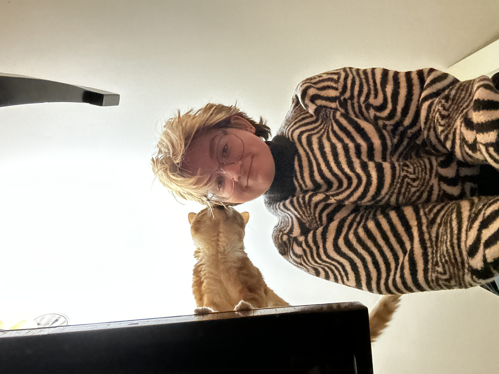

I am an aspiring neuroscience researcher with a strong attention to detail and a deep curiosity about the biological mechanisms that shape behavior, cognition, and consciousness.
I graduated from Northwestern University with a Bachelor's degree in Neuroscience and a minor in Art Theory and Practice. I aim to bring a creative and dynamic approach to research methods and incorporate diverse perspectives into experimental practice.
During my time as a laboratory aide in the Gallio Lab at Northwestern University, I was able to shadow graduate researchers performing advanced Drosophila research using dissection, optogenetic mapping, and connectomics. Through my work, I gained a foundational understanding of the genetic basis behind environmentally motivated behavior and the principles of experimental design.
In addition, as a research assistant at the Center for Circadian & Sleep Medicine at the Feinberg School of Medicine, I explored the critical role of sleep in overall health. My work there deepened my understanding of sleep biology and its connections to healthy aging, as well as its impact on cardiometabolic function. My education and experience has allowed me to build a comprehensive understanding of both the fundamentals of neuroscience and its practical applications.